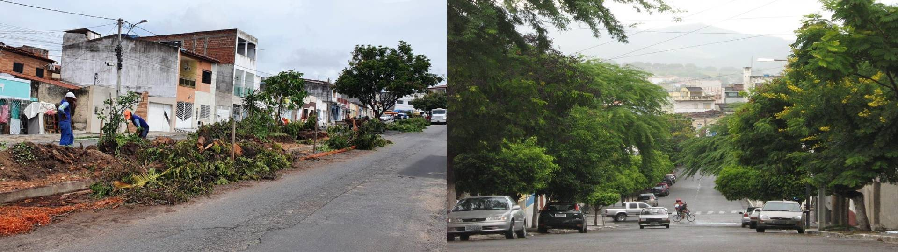

Por que comparar?
Jequié, no interior da Bahia, tem clima tropical quente e úmido. Cidades do Sul do Brasil, como Curitiba (PR), mostram como a arborização bem planejada transforma espaços públicos, reduz calor e melhora a vida de todos.
🌆 Jequié — BA
- Localização: Nordeste da Bahia
- Clima: Tropical — quente a maior parte do ano
- Vegetação: Caatinga e Mata Atlântica
- Desafio: Pouca arborização nas ruas principais
- Benefício: Mais árvores = menos calor e mais qualidade de vida
🌳 Curitiba — PR
- Localização: Sul do Brasil
- Clima: Temperado — mais ameno
- Vegetação: Mata Atlântica e Araucária
- Referência: Cidade muito arborizada
- Resultado: Temperaturas mais baixas e ruas sombreadas

Jequié × Cidade Arborizada